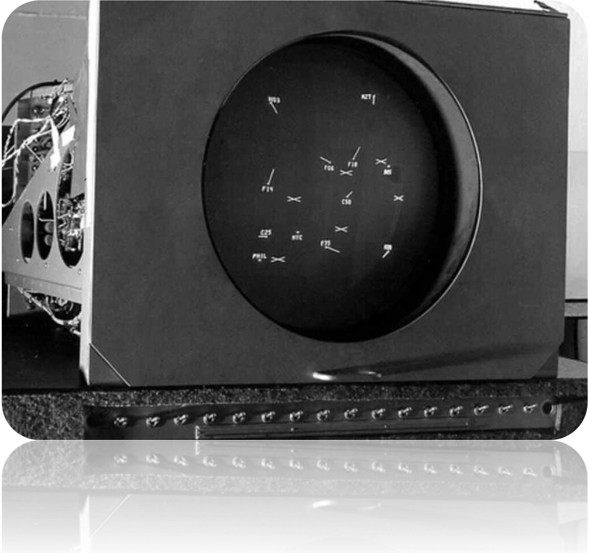

The first videogame
The first resemblance of a videogame dates back to the late fourties. A more inexpert one might think of the first videogame as Pong, but that actually came out in 1972. It might surprise you that this a commonly discussed and rather controversial or debatable topic for historians and enthusiasts alike. We first have to define what a videogame is in the first place. A videogame is a type of electronic game whose players' interactions through an input device are directly displayed on a screen. Thomas T. Goldsmith Jr invented the "Cathode-ray tube amusement device" in 1947, the earliest known interactive electronic game, controlled by the player by adjusting knobs to change the trajectory of a CRT beam spot on the display in order to reach plastic targets overlaid on the screen. However, this cannot be qualified as a "videogame" because it is not really a game per se. The machine relied on oscilloscope-based technology of the era (the same kind used by the navy and commonly found on sonars and radars). Later, in 1950, a computer game called Bertie the Brain was invented by Josef Kates for the Canadian National Exhibition. It was a giant four meter computer that allowed attendees to play a game of Tic-Tac-Toe against artificial intelligence. However, it displayed the action via light bulbs rather than a screen with visual graphics. Where the cathode-ray tube abusement device lacked the game, Bertie the Brain lacked the video. This poses a problem for historians as to what can actually be classified as one, but if you ask experts, you will find the general consensus exists: Tennis for Two.
